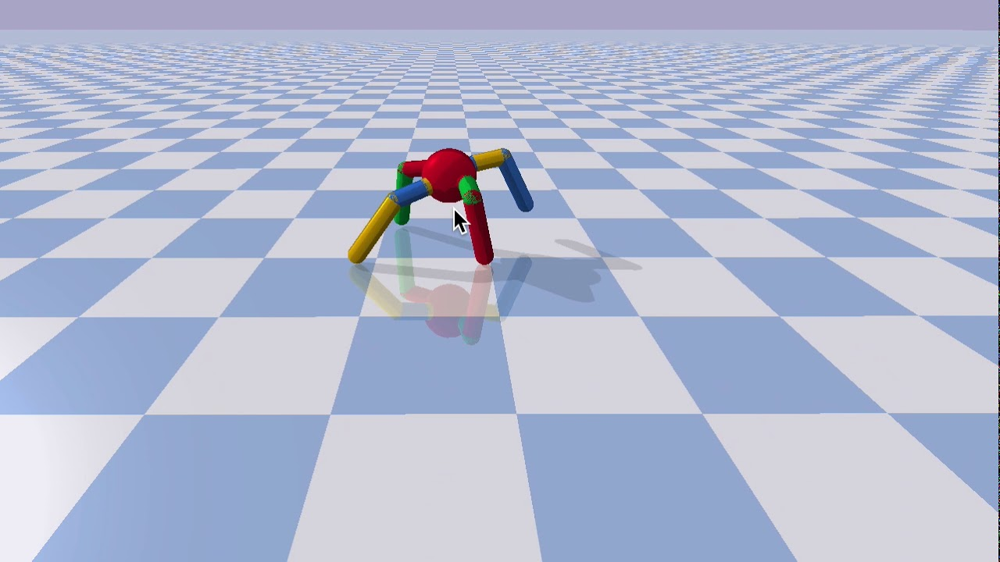

Day 4, Part B: Creating Custom Environments¶
Learning goals¶
How to build your own custom environment
How to connect environments to other simulations/platforms
Definitions¶
Simulation environment: Notice that this is not the same as the python/conda environment. The simulation environment is the simulated world where the reinforcement learning takes place. It provides opportunities for an agent to learn and explore, and ideally provides challenges that aid in efficient learning.
Agent (aka actor or policy): An entity in the simulation environment that performs actions. The agent could be a person, a robot, a car, a thermostat, etc.
State variable: An observed variable in the simulation environment. They can be coordinates of objects or entities, an amount of fuel in a tank, air temperature, wind speed, etc.
Action variable: An action that the agent can perform. Examples: step forward, increase velocity to 552.5 knots, push object left with force of 212.3 N, etc.
Reward: A value given to the agent for doing something considered to be ‘good’. Reward is commonly assigned at each time step and cumulated during a learning episode.
Episode: A learning event consisting of multiple steps in which the agent can explore. It starts with the unmodified environment and continues until the goal is achieved or something prevents further progress, such as a robot getting stuck in a hole. Multiple episodes are typically run in loops until the model is fully trained.
Model (aka policy or agent): An RL model is composed of the modeling architecture (e.g., neural network) and parameters or weights that define the unique behavior of the model.
Policy (aka model or agent): The parameters of a model that encode the best choices to make in an environment. The choices are not necessarily good ones until the model undergoes training. The policy (or model) is the “brain” of the agent.
Replay Buffer: A place in memory to store state, action, reward and other variables describing environmental state transitions. It is effectively the agent’s memory of past experiences.
On-policy: The value of the next action is determined using the current actor policy.
Off-policy: The value of the next action is determined by a function, such as a value function, instead of the current actor policy.
Value function: Function (typically a neural network) used to estimate the value, or expected reward, of an action.
More practical than the Ant environment¶

Well. Now you can take your ant off-the-shelf and make it do all sorts of fun tricks with modifications to the environment, the reward, and the training routine. It’s time to go make an army of virtual ants to do everything we need. Oh - you had other, actual, applications? Are you sure it can’t be solved with a dancing ant?
And that brings us to the pressing point: a virtual ant is well and fine, but we don’t actually just want a fancy, simulated robo-ant. What we want is to be able to hook up our new intelligent machinery to something we actually care about and that needs a boost from an RL model.
Maybe the agent is a person, a vehicle, a robot, or whatever. It could also have actions that we haven’t used before, like pick up box and put down box. You can choose whatever state and action variables you need to accomplish a goal in the environment.
The environment does not need to be a simulated world either. RL models can control lots of things. For example, Google uses RL to control its data warehouse cooling system.
In this lesson, however, we will stick with an environment that is not too different from the one you’ve been working with for the sake of simplicy.
Customize SimpleEnv¶
Thankfully, the template to make your own environment is actually simpler than you’d think. The details will only get as messy as your environment, so start with the general architecture and add features as you go.
By building a new class off of gym.Env (subclassing) we get all the general machinery we need - we just have to define four things:
__init__(self)step(self, action)render(self)reset(self)Bonus optional:
seed(self, seed=None)
The great majority of your work will happen in step() - given the past action (usually an array) this is what takes your environment from state t to state t+1. The step() is also in charge of determining the reward for that step from t to t+1 and returning it. In a simple case, your step() may simply take the action components and modify the environment directly, or in more complicated cases, this is where you would call other components in your simulation engine to step forward (e.g. robotics, physics, etc. simulations). If you were, for example, running a physics environment similar to Pybullet, then step() would pass the action and step-simulation commands over to the engine and have methods for receiving the new state, as well as calculating the reward.
Take a look at a bare-bones setup below:
import gym, gym.spaces, gym.utils, gym.utils.seeding
import numpy as np
class SimpleEnv(gym.Env):
def __init__(self):
self.action_space = gym.spaces.box.Box(low=0,high=1, shape=(2,), dtype=np.float32)
self.observation_space = gym.spaces.box.Box(low=0,high=10, shape=(4,), dtype=np.float32)
self.reset()
def step(self, action):
self.state = np.array([action[0],action[0],action[1],action[1]], dtype=np.float32)
reward = 1
done = False
info = {}
return self.state, reward, done, info
def render(self):
pass
def reset(self):
self.state = np.array([0,0,0,0], dtype=np.float32)
return self.state
def seed(self, seed=None):
self.np_random, seed = gym.utils.seeding.np_random(seed)
return [seed]
If you were to take our usual TD3 implementation (similar to the code below), dump the code above into a file named MySimpleEnv.py, and change the registration to point to file:class it will run without error and dump 1000 as the episode reward over and over (reward = 1 for 1000 steps). It’s not terribly exciting, but it ran!
Let’s look more closely at action_space and observation_space. These are defined by gym utility functions in spaces. They define the dimension and type (discrete or continuous) of each variable.
It’s up to the step function to make sense of those variables, and it is important to make sure values stay within the low/high ranges dictated by the definitions
For algorithms like TD3 that apply action noise, it’s very important to understand the scale of each of the action values. If you have one variable on the range [0,100] and another on [0,1], but the algorithm is basing the scale of noise off of the [0,100] variable, you may be completely washing out your second action variable with noise, unless you make modifications to the routine to make the action noise scaled per action.
Try to get a feel for what’s happening in the action and observation spaces by examining some characteristics of them (add some new cells and examine the observation space too):
action_space = gym.spaces.box.Box(low=0,high=1, shape=(2,), dtype=np.float32)
action_space.sample()
action_space.high
action_space.high[0]
In TD3 main(), they scale noise by max_action = float(env.action_space.high[0]) so all action noise is based on the scale of the first action-space variable.
Looking again at the SimpleEnv() class:
step()takes the action array and applies changes to the environment state with those action variables.step()then returns that state in the range and dimension that the observation_space can handle.recall that not all information about the state of your environment needs to be passed back. You can have placeholders and simulation states held by things external to the observation/state return.
Finally,
reset()needs to take the environment state back to the starting conditions of your episode - just reset everything to 0.
MyCustomEnv¶
Let’s now look at an environment with a tiny bit more meat on its bones - we’ve included MyCustomEnv.py in the Course_Material folder. If you look at the code, you’ll see it’s not doing that much more than the SimpleEnv above. The general idea in the environment is that there’s an agent that needs to get to a point in (x,y)-space.
In MyCustomEnv, the agent has two state variables
Position
Heading
And it has two actions:
Turn heading +/- 40 degrees
Throttle
It’s rewarded by getting closer to the target coordinates, similar to our ant, but without all the robotics and physics in the way - point your agent’s heading, hit the throttle and it moves; no momentum, etc.
If you run the code below (again, just the main() from TD3 with our new environment registered) it will train the agent to achieve the goal we defined in the reward. Note these two points:
We can create environments that will actually solve, given the right inputs.
This could have been solved by an extremely simple, hand-coded function. Not everything needs to be RL… but it can be.
import numpy as np
import torch
import gym
import pybullet_envs
import os
import sys
from pathlib import Path
sys.path.append(str(Path().resolve().parent))
import utils
import TD3
# Runs policy for X episodes and returns average reward
# A fixed seed is used for the eval environment
def eval_policy(policy, env_name, seed, eval_episodes=10):
eval_env = gym.make(env_name)
eval_env.seed(seed + 100)
avg_reward = 0.
for _ in range(eval_episodes):
state, done = eval_env.reset(), False
while not done:
action = policy.select_action(np.array(state))
state, reward, done, _ = eval_env.step(action)
avg_reward += reward
avg_reward /= eval_episodes
print("---------------------------------------")
print(f"Evaluation over {eval_episodes} episodes: {avg_reward:.3f}")
print("---------------------------------------")
return avg_reward
from gym.envs.registration import registry, make, spec
def register(id, *args, **kvargs):
if id in registry.env_specs:
return
else:
return gym.envs.registration.register(id, *args, **kvargs)
register(
id='MyCustomEnv-v0',
entry_point='MyCustomEnv:MyCustomEnvClass',
max_episode_steps=1000,
reward_threshold=2500.0
)
def main():
args = {
"policy" : "TD3", # Policy name (TD3, DDPG or OurDDPG)
"env" : "MyCustomEnv-v0", # OpenAI gym environment name
"seed" : 0, # Sets Gym, PyTorch and Numpy seeds
"start_timesteps" : 25e3, # Time steps initial random policy is used
"eval_freq" : 5e3, # How often (time steps) we evaluate
"max_timesteps" : 0.25e6, # Max time steps to run environment
"expl_noise" : 0.1, # Std of Gaussian exploration noise
"batch_size" : 256, # Batch size for both actor and critic
"discount" : 0.99, # Discount factor
"tau" : 0.005, # Target network update rate
"policy_noise" : 0.2, # Noise added to target policy during critic update
"noise_clip" : 0.5, # Range to clip target policy noise
"policy_freq" : 2, # Frequency of delayed policy updates
"save_model" : "store_true", # Save model and optimizer parameters
"load_model" : "", # Model load file name, "" doesn't load, "default" uses file_name
}
file_name = f"{args['policy']}_{args['env']}_{args['seed']}_custom"
print("---------------------------------------")
print(f"Policy: {args['policy']}, Env: {args['env']}, Seed: {args['seed']}")
print("---------------------------------------")
if not os.path.exists("./rewards"):
os.makedirs("./rewards")
if not os.path.exists("./results"):
os.makedirs("./results")
if args['save_model'] and not os.path.exists("./models"):
os.makedirs("./models")
env = gym.make(args['env'])
# Set seeds
env.seed(args['seed'])
env.action_space.seed(args['seed'])
torch.manual_seed(args['seed'])
np.random.seed(args['seed'])
state_dim = env.observation_space.shape[0]
action_dim = env.action_space.shape[0]
max_action = float(env.action_space.high[0])
kwargs = {
"state_dim": state_dim,
"action_dim": action_dim,
"max_action": max_action,
"discount": args['discount'],
"tau": args['tau'],
}
# Initialize policy
if args['policy'] == "TD3":
# Target policy smoothing is scaled wrt the action scale
kwargs["policy_noise"] = args['policy_noise'] * max_action
kwargs["noise_clip"] = args['noise_clip'] * max_action
kwargs["policy_freq"] = args['policy_freq']
policy = TD3.TD3(**kwargs)
if args['load_model'] != "":
policy_file = file_name if args['load_model'] == "default" else args['load_model']
policy.load(f"./models/{policy_file}")
replay_buffer = utils.ReplayBuffer(state_dim, action_dim)
# Evaluate untrained policy
evaluations = [eval_policy(policy, args['env'], args['seed'])]
state, done = env.reset(), False
episode_reward = 0
episode_timesteps = 0
episode_num = 0
with open('./rewards/Day4_cust.txt', 'w') as f:
for t in range(int(args['max_timesteps'])):
episode_timesteps += 1
# Select action randomly or according to policy
if t < args['start_timesteps']:
action = env.action_space.sample()
else:
action = (
policy.select_action(np.array(state))
+ np.random.normal(0, max_action * args['expl_noise'], size=action_dim)
).clip(-max_action, max_action)
# Perform action
next_state, reward, done, _ = env.step(action)
done_bool = float(done) if episode_timesteps < env._max_episode_steps else 0
# Store data in replay buffer
replay_buffer.add(state, action, next_state, reward, done_bool)
state = next_state
episode_reward += reward
# Train agent after collecting sufficient data
if t >= args['start_timesteps']:
policy.train(replay_buffer, args['batch_size'])
if done:
# +1 to account for 0 indexing. +0 on ep_timesteps since it will increment +1 even if done=True
print(f"Total T: {t+1} Episode Num: {episode_num+1} Episode T: {episode_timesteps} Reward: {episode_reward:.3f}")
print(f"Total T: {t+1} Episode Num: {episode_num+1} Episode T: {episode_timesteps} Reward: {episode_reward:.3f}", file=f)
# Reset environment
state, done = env.reset(), False
episode_reward = 0
episode_timesteps = 0
episode_num += 1
# Evaluate episode
if (t + 1) % args['eval_freq'] == 0:
evaluations.append(eval_policy(policy, args['env'], args['seed']))
np.save(f"./results/{file_name}", evaluations)
if args['save_model']: policy.save(f"./models/{file_name}")
main()
Our included SingleAnalysis.ipynb will plot your rewards over time. We also modified main() above to dump the rewards info to file along the way, so if you’ve just run things, the file should be in the rewards folder. We also have the plotting code duplicated below, so you can run those cells and view the plot here.
import time
import pandas
import hvplot.pandas
t_steps = []
reward_vals = []
def build_plot(file_name):
f = open(f"./rewards/{file_name}.txt")
for i in f:
if i[0] == "T":
a = str.split(i, ":")
b = str.split(a[1], " ")
t_steps.append(int(b[1]))
reward_vals.append(float(a[-1].strip()))
f.close()
build_plot("Day4_cust")
df = pandas.DataFrame({'Time_Steps':t_steps, 'Reward':reward_vals})
df.hvplot(x='Time_Steps', y='Reward').opts(alpha=0.5, color='#8848ab')